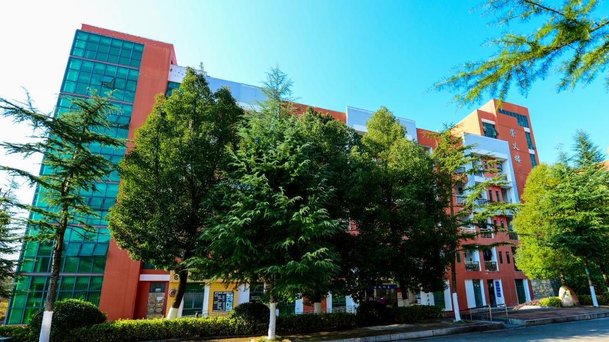
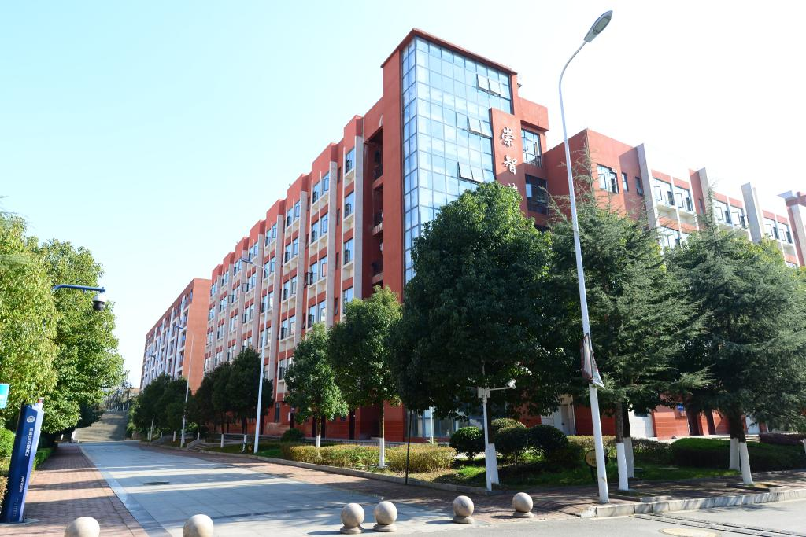
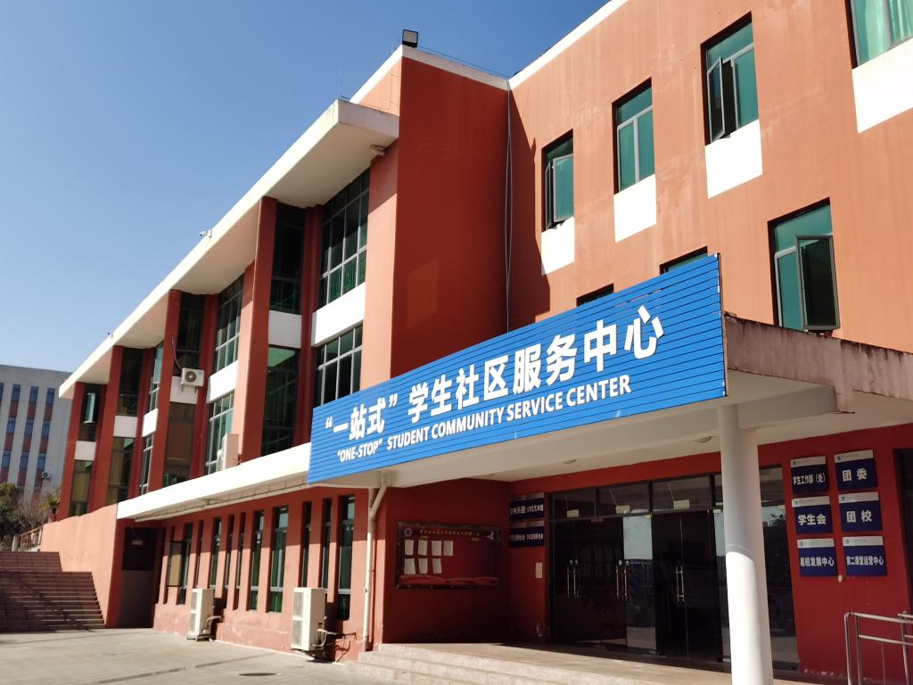

招生就业
电子信息工程系面向社会招生，现有以下三个招生专业，基本学制均为三年。
| 序号 | 招生专业 | 基本学制 | 主要学习内容 |
|---|---|---|---|
| 1 | 计算机应用技术 | 三年 | 程序设计基础、图形图像处理、三维动画制作、网页设计与制作、虚拟现实开发技术、居室空间设计等 |
| 2 | 计算机网络技术 | 三年 | 综合布线技术、局域网技术、网络互联技术、服务器管理、网络安全技术、网络系统集成、动态WEB(JSP)等 |
| 3 | 人工智能技术应用 | 三年 | 人工智能基础、Python程序设计、机器学习、计算机视觉、云计算技术、数据采集与处理、自然语言处理等 |
招生对象、报名时间及录取办法，以学校当年公布的招生简章为准。
二、就业方向
计算机应用技术：面向软件和信息技术服务、广告业、专业设计服务等行业，可从事室内设计、短视频创作与运营、虚拟现实技术应用、图形图像处理与网页设计与制作等工作。
计算机网络技术：面向互联网和相关服务、软件和信息技术服务业等行业的信息和通信工程技术人员、信息通信网络维护人员、信息通信网络运行管理人员等职业群，可从事计算机网络售前技术支持、网络应用开发、网络系统运维、网络系统集成等工作。
人工智能技术应用：面向各行业与人工智能结合后的应用场景，可从事数据的采集、存储、学习、分析和推理，以及人工智能算法应用、智能信息处理与分析、智能技术应用等处理、服务、开发、维护和利用工作。
三、校园生活与实训条件
-

崇义楼（学生公寓） -

崇智楼（学生公寓） -

学校室内体育馆 -

“一站式”学生社区
系部建有国家级计算机应用技术高技能人才培养基地、华为ICT学院、H3C网络学院，并建有计算机网络综合布线、软件开发、图形图像设计、室内装饰设计、智能应用、网络云计算、网络安全、电子综合等专业实训室十余个，学生机房19个、多媒体教室11个，为学生技能训练和顶岗实习提供了良好条件。
四、咨询与报名
| 项目 | 内容 |
|---|---|
| 招生咨询 | 0857-8330476 |
| 学校地址 | 贵州省毕节市金海湖新区职教城文曲路 （邮编：551700） |
| 联系电话 | 0857-8330367（传真：0857-8330367） |
| 电子邮箱 | bjzybgs@163.com |
| 招生就业指导处 | https://www.gzbjzy.edu.cn/zsjyc/ |
| 就业信息网 | http://gzbjzy.bysjy.com.cn/ |
招生咨询、报名及录取信息请以学校官网公布为准：https://www.gzbjzy.edu.cn/